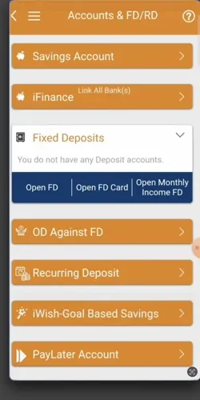
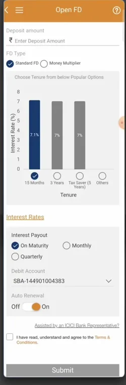
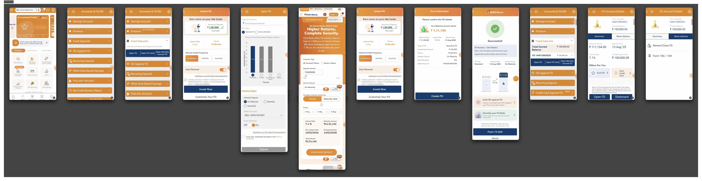
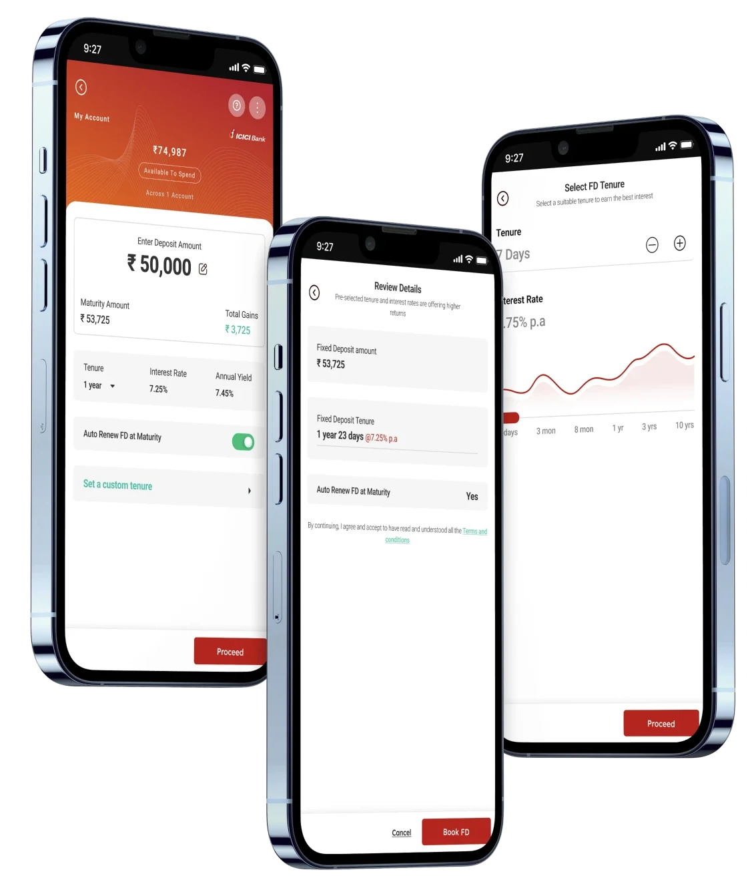
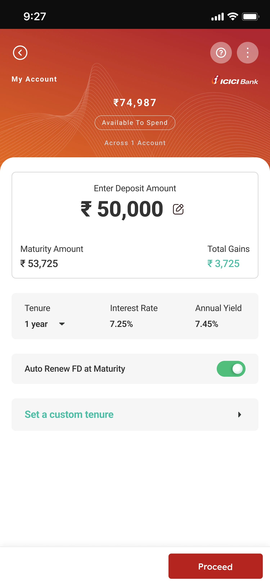
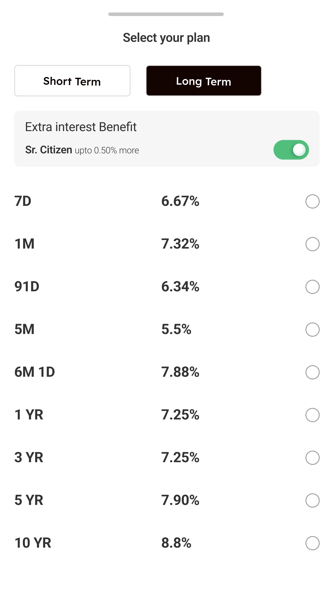
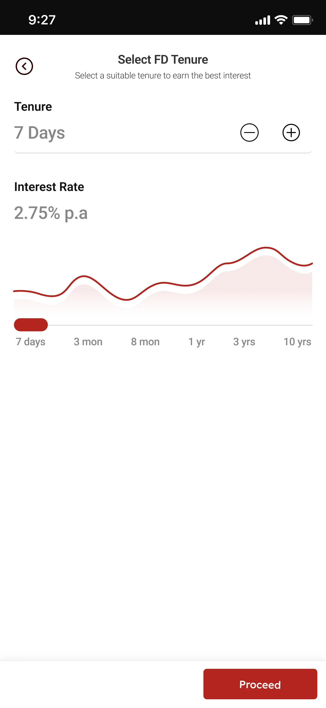
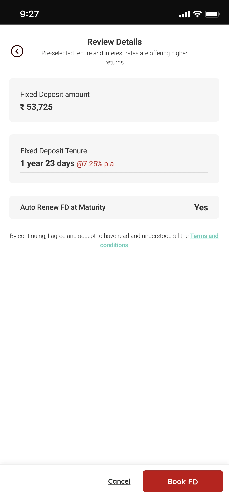

People could open an FD. They just could not easily understand the decision.
Opening a Fixed Deposit is easy. Feeling sure about it is not. Before committing their money, people wanted clear answers to three questions: what will I get back, how long is my money locked, and what happens after it matures. In the existing flow those answers arrived late, or on screens away from the decision. I redesigned this mobile banking experience around that moment, so returns, tenure and what happens after booking are clear before anyone commits.
Role
Product Designer
Independent concept
Scope
Research, UX, UI
Prototyping
Platform
Mobile banking
End to end FD creation
At a glance
2
Existing FD users interviewed
3
Uncertainties found
3
Design decisions
7
Prototype screens
01The Problem
The problem was not creating an FD. It was feeling confident about creating one.
Illustrative scenario
A storyboard of the problem, not a documented session.
Grouped from the two interviews. The existing app answers these questions late, or not on the screen where the decision is made.
02The Existing Journey
Where confidence breaks down
Before redesigning anything, I walked the live app end to end and captured every screen in the FD path.
1Find FD
2Choose path
3Enter details
4Choose tenure
5Understand returns
6Review
7Confirm
Dark steps are where confidence breaks down.

FD/RD is not on home.It is one of seven items in an account menu.

Everything sits above one button.Amount, type, tenure, payout and renewal.A separate calculator.Returns live on their own screen.The outcome arrives late.Only at Pre Confirmation, after the details.
Screens captured from the live ICICI Bank app, for reference only. Independent review, not affiliated with or commissioned by ICICI Bank.
See the full captured journey

How might we make FD creation feel more transparent, understandable and confidence inspiring?
Two interviews are a small sample. They frame the problem and do not size it.
What research showed, and what it changed
ThemeWhat people neededDesign response
OutcomeThe maturity amount, interest and return in view before confirming.→Show maturity and gains beside the amount
CommitmentTo know what control they keep when money is locked away.→Make auto renewal and review explicit
ChoiceTenure, maturity and payout terms that do not need interpreting.→Simplify tenure comparison
Across both, people expected a simple digital journey with fewer steps and clearer guidance.
04Opportunity
Reduce uncertainty before commitment
Insight
People did not struggle to create an FD. They struggled to feel sure.
→
Opportunity
Bring the answers to the moment of decision.
→
Result
Three principles for the redesign.
01
Show the outcome early
What you will receive is clear while you decide.
Amount₹50,000
Maturity₹53,725
02
Make the decision simple
Compare tenures without decoding terms.
Short TermLong Term
1 YR7.25%
03
Create confidence before commitment
The last step informs people, it does not rush them.
Review Details
Book FD
05The Redesign
The decision happens before the commitment.

The deposit, review and custom tenure screens.
The prototype in motion
What is Fixed Deposit, one amount screen, a plan sheet, review, book.
Prototype note. Rates and financial values shown are illustrative. They are not financial advice or live banking information.
06Design Decisions
Three decisions, and why I made them

Decision 01 Outcome
Show the outcome while the user is still deciding
Amount ₹50,000→Maturity ₹53,725→Gains ₹3,725
Why. People wanted to know what they would receive before they committed, so the answer sits beside the amount instead of on a later screen.


Decision 02 Choice
Make tenure easier to compare
Preset plans→Compare rates→Custom tenure
Why. Options were hard to compare and the terms added doubt, so every plan shows its rate on one row. More flexibility can mean more complexity, so simple choices come first and custom tenure appears when people want more control.

Decision 03 Commitment
Separate understanding from commitment
Decide→Review→Book FD
Why. FDs felt rigid and people were unsure what they were agreeing to, so one review step repeats the terms and Book FD becomes the only commitment.
07Before and After
What changed, and what it costs
Before
Enter amount
→
Continue
→
Later, understand the outcome
After
Enter amount
→
See the outcome
→
Choose
→
Review
→
Commit
Existing experienceRedesign
EntryFD buried in an account menuFD/RD one tap from home
PathsSeveral overlapping pathsOne focused journey
ReturnsAppear lateShown while deciding
Decision screenDense amount and details formOne card, amount to renewal
CommitmentBecomes clear lateExplicit review before booking
Trade offs
More informationvsSimplicity
Showing maturity, gains, rate and yield earlier adds transparency and adds density.
FlexibilityvsDecision complexity
Custom tenure gives control, and it can make choosing harder.
ReassurancevsFriction
A review step is one more step, and it makes the commitment explicit.
Design considerations, not measured outcomes.
08Validation
What I know, what changed, what I do not
What informed it
Two interviews with FD users
A walkthrough of the live app
An end to end prototype
What changed
Clearer hierarchy
Returns surfaced earlier
A focused decision screen
An explicit review step
What remains unknown
Business impact
Conversion
Long term behaviour
Impact
Business impact was not measured. This is an independent concept tested as a prototype. The changes above are design outcomes, not measured results.
What I would validate next, future work, not results
Comprehension
Can people explain how much they receive at maturity?
Decision confidence
Can they explain why they chose a tenure?
Task completion
Can they finish the flow without help?
Drop off
Does showing outcomes earlier change abandonment?
Commitment clarity
Do they understand renewal and what follows booking?
Also to check, whether "upto 0.50% more" for senior citizens reads as precise enough, and whether short tenure codes such as "6M 1D" are read correctly.
09Learnings
Three things I am taking from this
01
Financial UX needs clarity before persuasion.
02
Showing the outcome early can change how people decide.
03
Research is only valuable when it changes the product.
10The Outcome
What changes for the person
The answers were always somewhere in the app. Now they are where the decision happens.
What will I get back?
Before
On a separate calculator, or at the last confirmation
Now
Beside the amount, as you type
How long is my money locked?
Before
A chart, a slider and about ten fields
Now
Plans and rates in one column
What am I agreeing to?
Before
Clear late, at the last step
Now
One review, then Book FD
How it helps
Confidence before commitment. People can explain what they will receive, how long, and what happens next, before they book.
Fewer decisions at once. Amount and outcome first, then tenure, then one review.
Control stays visible. Auto renewal is a switch, and Cancel sits beside Book FD.
These are design outcomes. Business impact was not measured, and nothing here is a tested result.
In financial products, simplicity is not just fewer screens. It is less uncertainty at the moments that matter.
Independent concept, not affiliated with or commissioned by ICICI Bank. Rates and financial values are illustrative.
![Four panel black and white comic. Panel 1, a woman at a laptop wants to open an FD and asks how much she will get at maturity, how long her money will be locked and what happens after it matures. Panel 2, she scrolls a banking app with Popular Plans, Custom FD and Tax Saver FD and asks which tenure gives better returns. Panel 3, she enters 50,000 rupees and still cannot see what she will receive, with questions about tenure and auto renewal. Panel 4, she realises all she wants to know are those three questions.](assets/case-study/fd-comic.webp)